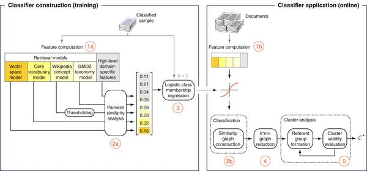

<script type="application/ld+json">
{
  "@context":"http://schema.org/",
  "@type":"Research",
  "name":"Person Resolution",
  "description":"",
  "url":"https://webis.de/research/person-resolution.html",
  "keywords":[
    "person-resolution"
  ], 
  "creator":[
    {
      "@type":"Organization",
      "url":"https://webis.de/",
      "name":"The Web Technology & Information Systems Network",
      "alternateName":"Webis"
    },
    {
        "@type":"Person", 
        "url":"http://www.uni-weimar.de/medien/webis/people/#stein",
        "affiliation":"Bauhaus-Universit\u00e4t Weimar", 
        "name":"Stein, Benno"
    },
    {
        "@type":"Person", 
        "url":"http://www.uni-weimar.de/medien/webis/people/#meyer-zu-eissen",
        "affiliation":"Bauhaus-Universit\u00e4t Weimar", 
        "name":"Meyer, Sven"
    }
  ],
  "includedInDataCatalog":{
  },
  "distribution":[
  ]
}
</script>

<main class="uk-section uk-section-default">
    <div class="uk-container">
        <h1>Person Resolution</h1>

        <ul class="uk-list">
            <!-- Comment out sections you do not provide -->
            <li><span data-uk-icon="chevron-down"></span> <a href="#synopsis">Synopsis</a></li>
            <li><span data-uk-icon="chevron-down"></span> <a href="#research">Research</a></li>
            <li><span data-uk-icon="chevron-down"></span> <a href="#people">People</a></li>
            <li><span data-uk-icon="chevron-down"></span> <a href="#publications">Publications</a></li>
        </ul>
    </div>

    <div class="uk-container uk-margin-medium">
        <!--
        SECTION Synopsis
        -->
        <h2 id="synopsis">Synopsis</h2>

        <p>The mapping between people and their names is not one-to-one. When searching the World Wide Web for a person, one is immediately faced with this problem: search results contain Web pages of different individuals having the same name. Since an individual can have several Web pages, search results get cluttered, especially when searching for people with rather common names. The problem can only be addressed with a deeper semantic analysis: Web page content must be interpreted in multiple respects in order to distinguish between different individuals even if they have the same name. This grouping problem is also referred to as &quot;multi document person resolution&quot;; it has recently gained much attention, among others through the <a data-htmlarea-external="1" class="external-link-new-window" href="http://www.uni-weimar.de/en/media/news/awards/titel/professur-content-management-und-web-technologien-gewinnt-die-internationale-spock-challenge/">Spock Challenge</a>. The solution that is outlined below has been awarded the winner of this challenge. </p>

        <!--
        SECTION Research
        -->
        <h2 id="research">Research</h2>

        <p>The heart of our solution for the person resolution problem is similarity graph clustering. Let <em>G=&lt; V,E, &phi; &gt;</em> denote a weighted graph with node set <em>V</em>, edge set <em>E</em>, and edge weight function <em>&phi;</em>. Each node represents a document, and each edge <em>e</em> in <em>E</em> has a weight <em>&phi;(e)</em> in [0,1] that models the similarity of its incident documents with respect to their referents. Using such a graph-based approach, the challenge can be subdivided into the following steps.</p>
<ul><li><i>Modeling</i>. Design of a similarity function &phi; that reflects page similarity according to individuals (also called &quot;referents&quot;).</li><li><i>Merging</i>. Choice of a clustering algorithm to generate different clusterings using various parameters.</li><li><i>Evaluation</i>. Test the validity of the generated clusterings in order to choose the best.</li></ul>
<p>In general, the modeling part constitutes the most critical and most important part in the analysis process. If the model is poor, no combination of clustering algorithm or validity measure can succeed in producing a high quality clustering.</p>
    

    <p><em>Analysis Process</em>. For training purposes, we assume the existence of a training set of Web pages that has been labeled according to referents. The analysis process is depicted in the figure above. At training time (left hand side), a similarity measure in form of a classifier is learned from the training data, which is employed online (right hand side) for deriving similarities of previously unseen Web pages. In the following, the procedure for learning a similarity function (at training time) and the procedure for applying the learned similarity function are shown.<br /> </p>
<p>Training procedure:</p>
<blockquote class="person-resolution-steps"><p>(1a) For each document within an instance, several representations are computed. In particular, we compute a vector space representation using a TF*IDF weighting scheme, a core vocabulary representation, a semantic similarity model based on Wikipedia, a categorical model where the document is classified into the DMOZ hierarchy, and a high-level domain specific model that uses an NLP parser to extract specific knowledge. </p></blockquote>
<blockquote class="person-resolution-steps"><p>(2a) For each pair of documents, similarity values &phi;<sub>i</sub> according to the mentioned document representations are computed.</p></blockquote>
<blockquote class="person-resolution-steps"><p>(3) A logistic regression is used to combine the similarity values <em>&phi;<sub>i</sub></em> of an edge <em>e</em> into a single value <em>&phi;</em>. The objective of the regression is to produce a value of <em>&phi;</em>(<em>e</em>)=1 if the incident documents of e belong to the same referent, and <em>&phi;</em>(<em>e</em>)=0 otherwise. In other words, the value of the logistic regression represents the probability that the documents incident to <em>e</em> belong to the same individual.</p></blockquote>
<p>Once the model is learned, it can be employed to combine the similarity values <em>&phi;<sub>i</sub></em> into one value <em>&phi;</em> for previously unseen data. The following procedure illustrates how the trained classifier is used online.</p>
<p>Application of the learned model:</p>
<blockquote class="person-resolution-steps"><p>(1b) For each pair of documents in an instance, the similarity values <em>&phi;<sub>i</sub></em> are computed.</p></blockquote>
<blockquote class="person-resolution-steps"><p>(2b) The trained classifier is used to combine the <em>&phi;<sub>i</sub></em> into one value <em>&phi;</em>, which is used as edge weight in a similarity graph <em>G</em>.</p></blockquote>
<blockquote class="person-resolution-steps"><p>(4) The similarity graph is reduced to a <em>k</em>-nearest-neighbor graph in order to reduce noise.</p></blockquote>
<blockquote class="person-resolution-steps"><p>(5) The similarity graph is clustered with the MajorClust algorithm (Stein and Niggemann 1999) using different density thresholds. The resulting clusterings are assessed with respect to their validity using the expected density measure &rho; (Stein and Meyer zu Eissen 2003, Meyer zu Eissen 2007).</p></blockquote>


        <!--
        SECTION People
        -->
        <h2 id="people">People</h2>
       <ul><li><a title="Sven Meyer zu Eissen" class="internal-link" href="http://www.uni-weimar.de/medien/webis/people/#meyer-zu-eissen">Sven Meyer zu Eissen</a></li><li><a title="Benno Stein" class="internal-link" href="http://www.uni-weimar.de/medien/webis/people/#stein">Benno Stein</a></li></ul>
    <p>Students: Steffen Becker, Christof Br&auml;utigam, Tino R&uuml;b, and Hagen-Christian T&ouml;nnies</p>
	<!--
	SECTION Publications
	-->
	<h2 id="publications">Publications</h2>
        <div id="publications-list">
        </div>
	</div>
        </div>
</main>

<script src="https://webis.de/js/bibentry.js"></script>
<script>
includeBibentries(document.getElementById("publications-list"), "projects:person-resolution");
</script>
